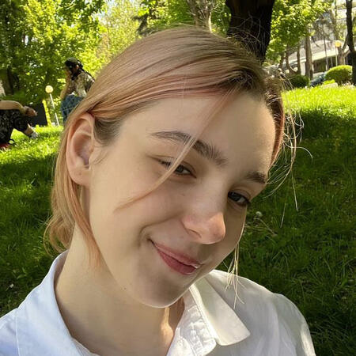

Staff-ul Feminismd
Fondatoarea și președinta Feminismd
Milena Rusu
Mama organizației, meme-genius, și mereu în căutare de adrenalină, e cea mai bună mentoră pe care ai fi putut să o ai.
Pentru ea, probleme imposibile nu există.
Project Managera Feminismd
Nica Gojan
O feministă intersecțională, cu o pasiune pentru astrologie, care se află într-o misiune de a descoperi de ce și cum se suprapun identitățile care creează experiențe combinate de discriminare. Pasiunea ei constă în abordarea problemelor globale, cum ar fi inegalitatea de gen și acțiunea climatică, prin activism și voluntariat.

Coordonatoarele
Advocacy & Planning Nicoleta
Frosinean si Evelina
Sopivnic Organizează evenimente despre care se vorbește 90% din timp.Sunt feministe înrăită ce și-au găsit comunitatea pe care o iubesc și o susțin fără rezerve.